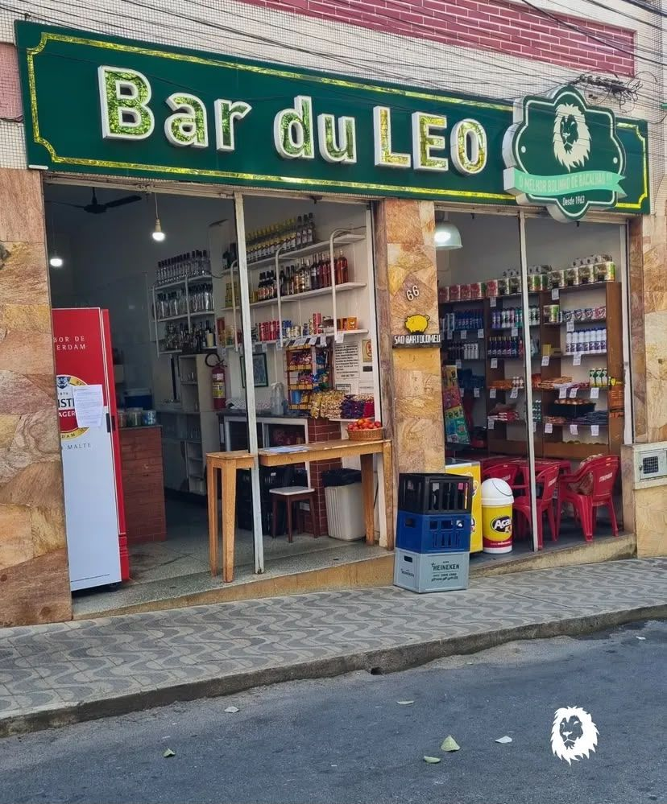
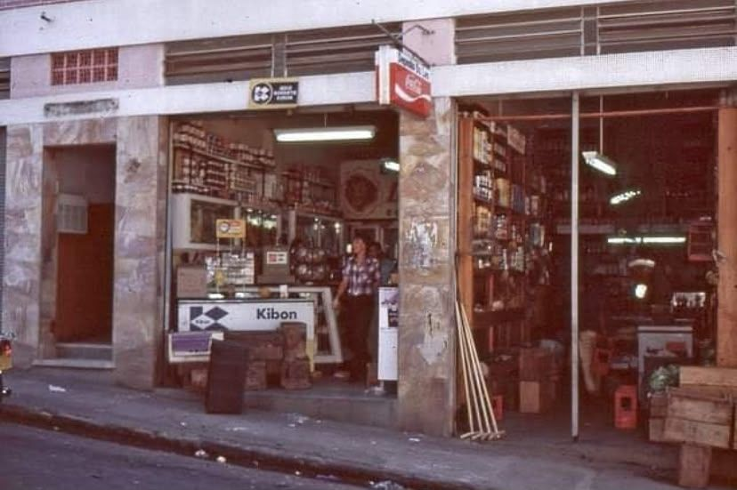

Jardim Glória • Juiz de Fora
Boteco de verdade,
com alma de praça.
Pastel famoso, cerveja gelada, samba e uma história que faz parte de Juiz de Fora desde 1963.
63 anos de tradiçãoFeito para abrir o apetite
Nosso cardápio
Escolha seus favoritos e monte seu pedido.
no cardápio
Nenhum produto encontrado para essa busca.

Uma história de família
Desde 1963, fazendo parte da praça.
O Bar du Léo nasceu em 1963 como uma mercearia dedicada à distribuição de pães, fundada por Avelino Vicente, o Léo, e Lecy. Com o tempo, tornou-se um tradicional boteco de praça no Jardim Glória — um lugar de encontros, sabores e boas histórias.
63 anos de tradiçãoÉ simples pedir
Como funciona
- 01
Escolha
Encontre seus produtos favoritos no cardápio.
- 02
Monte seu pedido
Confira quantidades e o valor no carrinho.
- 03
Finalize
Informe seu nome, o endereço (se for delivery) e observações.
- 04
Envie pelo WhatsApp
Seu pedido chega prontinho ao WhatsApp do Bar du Léo.